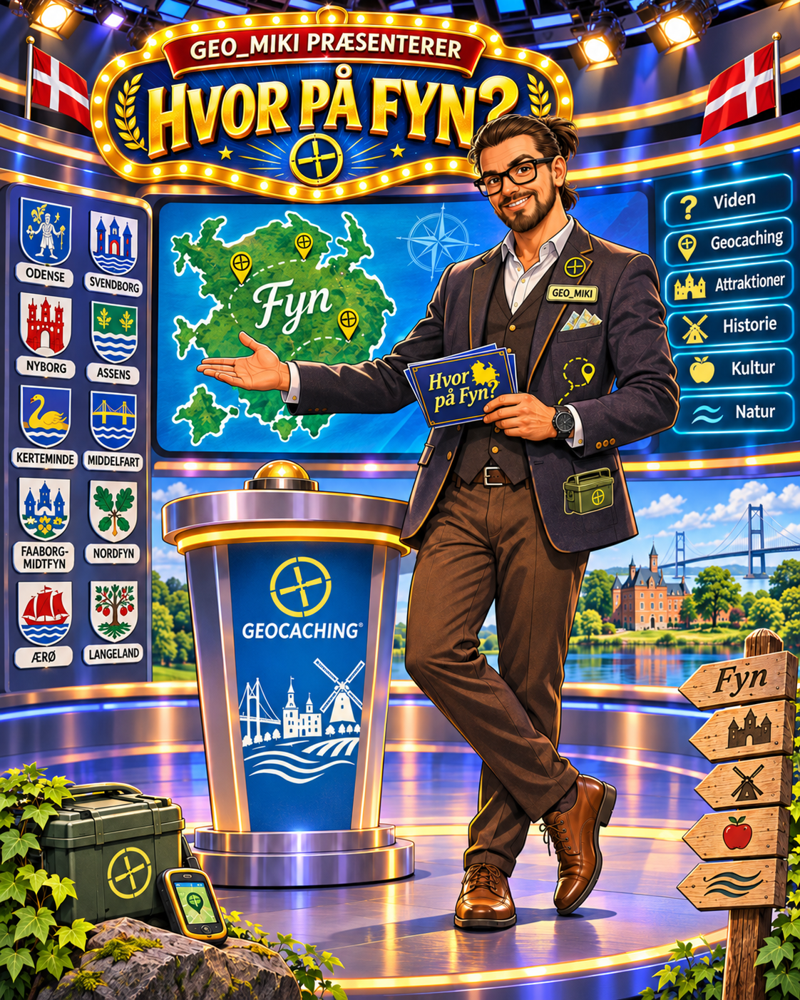

Geocaching-opgave
Hvilken fynsk kommune?
Løs gåden. Find kommunerne. Få koordinatet til skatten. 🧭
Sådan spiller du
- 🔎Du får én ledetråd ad gangen om en tilfældig kommune.
- 📍Klik på den cirkel på kortet, du tror er den rigtige kommune.
- 🎯Du skal svare rigtigt 10 gange.
- ❤️Du har 10 liv. Et forkert svar koster et liv, og du må starte forfra på alle kommuner. Din tid løber videre og tæller med på scoreboardet.
- ⏱️Du har 1 minut og 30 sekunder pr. spørgsmål. Løber tiden ud, koster det også et liv.
- 🔁Mister du alle liv, må du begynde forfra.
- 🏆Din samlede tid bruges på scoreboardet.
- 🧰Klarer du alle 10, får du koordinatet til cachen!
Hvilken kommune passer på ledetråden?
Du løb tør for liv 😢
Prøv igen – spørgsmålene bliver blandet på ny.
🎉 Tillykke!
Du har fundet alle 10 kommuner på .
Koordinaten til cachen er:
Scoreboard
| # | Navn | Tid (min) | Liv tilbage | Dato og tid |
|---|